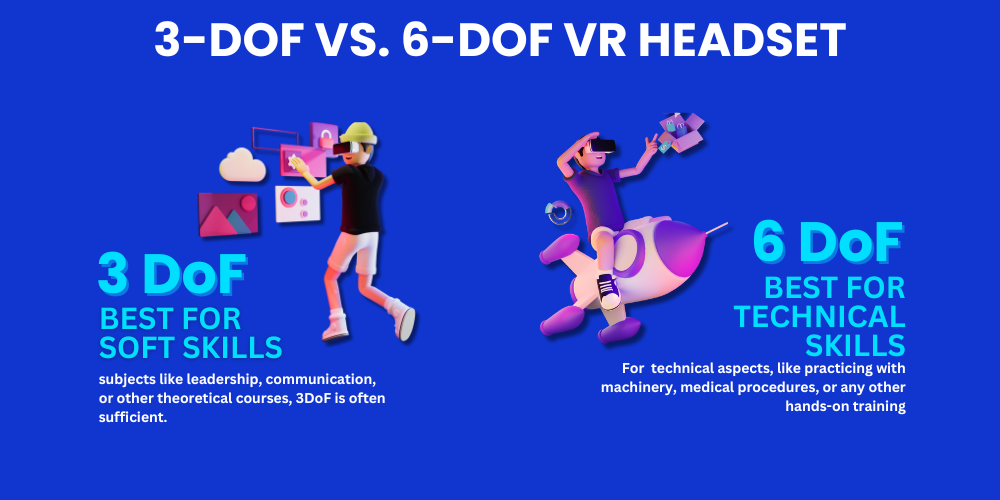

In the vast virtual world, every motion, every gesture, and every nuance of our movement plays a pivotal role in sculpting the experience. From the subtle tilt of our head to a bold leap into the digital unknown, how we interact within this realm is defined by a principle not from the future, but deeply rooted in the annals of physics and mathematics: Degrees of Freedom (DoF).
As the virtual world blossoms, expanding its horizon and blending with our reality, understanding this dance of dimensions becomes essential. Dive with us as we delve into the intricate choreography of 3-DoF and 6-DoF VR headsets, exploring their significance, applications, and how they redefine our digital escapades.
So, welcome to the frontiers of immersion!
What is Degrees of Freedom?
Degrees of Freedom (DoF) is a fundamental concept rooted in physics and mathematics.
It describes the number of independent parameters that define the state of a system or object. These parameters determine how the object or system can change its state.
In more tangible terms, imagine holding a pen. The various ways you can manipulate and move that pen, by rotating it, sliding it, and lifting it, represent the pen's degrees of freedom. In the world of robotics, DoF refers to the directions in which a robot joint can move. The more DoFs, the more complex and versatile the robot's movement capabilities are.
Now, when translated to Virtual Reality (VR), the concept of DoF gains a unique significance.
DoF refers to the dimensions of movement that a VR system can detect and reproduce. Simply put, it represents the user's ability to move around and interact with the VR environment. The more DoFs a VR system can support, the more intricate and rich the user's motion and interaction capabilities are in the virtual space.
The importance of DoF in VR cannot be overstated.
VR aims to recreate a 'real' experience in a digital world. When the system can detect more refined and varied movements of the user, it results in a more realistic and immersive virtual experience. For instance, if a VR system can only detect the tilt of your head but not the forward or sideways movement of your body, the virtual representation of the world might feel constrained or incomplete.
Degrees of Freedom serves as the backbone for interaction mechanics in VR.
While other factors like resolution, sound, and haptic feedback play crucial roles in VR immersion, DoF largely dictates how 'alive' and interactive the virtual world feels.
Think of it as the bridge between the physical environment of the user and the digital realm of the VR world. The sturdier and more intricate this bridge, the more seamless the journey between these two worlds becomes.
Also read: Virtual Reality vs Augmented Reality
Degrees of Freedom in VR
When exploring Degrees of Freedom in VR, there are two primary classifications: 3-DoF and 6-DoF. Let's delve into these.
3 DoF VR Headset (Three Degrees of Freedom)
3-DoF VR headsets allow users to experience a virtual world from a fixed point. Users can rotate their heads left/right, look up/down, and tilt sideways. However, there's no provision for lateral movements. Think of it as being in the center of a sphere and observing everything around you without stepping in any direction.
☑️ Features of 3-DoF VR Headsets:
● Predominantly uses pre-recorded 360° videos or a digitally modeled environment.
● Best suited for static scenarios.
● Doesn't track real-world walking or stepping actions.
3-DoF VR headsets are typically more affordable and are excellent for media consumption and scenarios where a panoramic view is sufficient. They're more reminiscent of experiences like observing an art gallery, attending a virtual concert, or enjoying a 360° film.
6 DoF VR Headset (Six Degrees of Freedom)
In contrast, 6-DoF VR headsets offer a full range of motion. In addition to the rotational movements offered by 3-DoF devices, 6-DoF also captures translational movements, i.e., forwards/backward, left/right, and up/down.
☑️ Features of 6-DoF VR Headsets:
- Enables users to physically navigate within the VR environment.
- Facilitates complex interactions, allowing users to move objects or engage in virtual tasks.
- Requires sophisticated tracking technologies.
The difference between 3-DoF and 6-DoF VR headsets fundamentally changes the user's experience. With 6-DoF, you're not just observing, you're "living" in the virtual world. Whether you're training in a simulated environment or playing an immersive game, the realism is unparalleled.
3-DoF vs 6-DoF VR Headset Which is better for education?

The debate between 3DoF and 6DoF has often centered around which offers a better, more immersive experience. However, when it comes to educational applications, the answer might not be as straightforward. It’s essential to understand their core differences, strengths, and potential applications.
Which is better for education?
Well, this depends upon the following factors-
Type of Training
● Soft Skills: For subjects like leadership, communication, or other theoretical courses, 3DoF is often sufficient. These subjects often involve scenarios or role-playing where complex interactions with the environment aren't necessary. As per industry experts, 3DoF aligns well with soft skills training.
● Technical Skills: If the learning involves technical aspects, like practicing with machinery, medical procedures, or any other hands-on training, 6DoF is superior. It allows students to practice real-world movements and actions in a safe, controlled environment.
☑️ Cost Considerations
Given the depth of immersion and complexity, 6DoF tends to be pricier. For educational institutions or organizations on a budget, this could be a determining factor. While custom 3DoF VR training materials might range from $20,000 – $75,000, the 6DoF alternatives often lie in the bracket of $50,000 – $150,000.
☑️ Interactivity and Engagement
The rule of thumb is simple- if the learning process requires direct interaction with the elements within the simulation, 6DoF is the way to go.
For example, a medical student practicing surgery would benefit more from 6DoF than a management student learning negotiation tactics.
☑️ Cybersickness
While looking for the degrees of freedom in VR, you should not forget about the noteworthy concern in the VR world, i.e., "cybersickness." Similar to motion sickness, cybersickness in VR arises due to disparities between what the eyes perceive and what the body feels.
This discrepancy is more prevalent in 3-DoF headsets, as the lack of full movement can confuse the brain, leading to symptoms like dizziness and nausea. However, advancements in 6-DoF technology and improved refresh rates have reduced these occurrences.
Best VR Headsets to Look for in 2023
As we are moving towards the end of 2023, a couple of standout devices have piqued the interest of VR enthusiasts and the best VR headsets among them are the Apple Vision Pro and Meta Quest Pro.
Both represent the zenith of VR technology, boasting crisp displays, impeccable tracking, and extended battery life.
☑️ Apple Vision Pro vs. Meta Quest Pro:
While both devices offer exceptional 6-DoF experiences, the Apple Vision Pro leans towards AR integration, blending elements of Augmented Reality (AR) and VR. This hybrid approach, combined with Apple's ecosystem, makes it a formidable contender.
On the other hand, Meta Quest Pro, formerly Oculus, prioritizes complete immersion, offering a vast library of VR content. The device also integrates with the Meta universe, heralding a new era of social VR interaction.
Also read: Apple Vision Pro vs. Meta Quest Pro
Conclusion
In the age of VR, understanding the Degrees of Freedom is pivotal for both consumers and developers.
The choice between 3-DoF and 6-DoF VR headsets hinges on the desired application and the level of immersion required. Whether it's the sheer cinematic experience of 3-DoF devices or the rich, interactive world of 6-DoF headsets, the VR landscape in 2023 promises unparalleled adventures.
So, strap on your headset and embark on a journey of limitless possibilities.

.png)